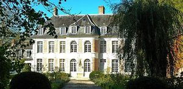
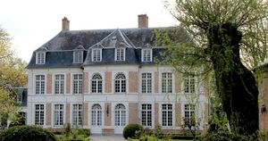
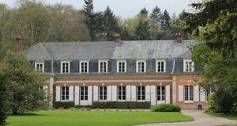
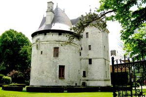

Recensement Jean-Claude Truffet
| Département | 80 — Somme |
| Canton | Rue |
| Commune | Dompierre sur Authie |
| Type d'édifice | Châteaux |
| Période d'origine | XV-XVII |
| Coordonnées GPS | 50° 18' 15,35" Nord, 1° 55' 12,71" Est Tour GPS : 50° 18' 15,35" Nord, 1° 55' 12,71" Est |




trois châteaux dans cet article; Dompierre, Ligescourt et la tour. DOMPIERRE, il existe deux châteaux à Dompierre sur Authie. Le plus ancien appartenait au début du XVe à Philippe d'Auxy qui fut tué à Azincourt, la seigneurie passa à sa sur dont le mari, David de Rambures, fut tué lui aussi dans le même combat. Leur fils la fit entrer dans le patrimoine des Rambures et Charles, dit brave Rambures posséda le château de 1593 à 1633. En 1703 il est décrit comme étant "un château-fort construit à l'antique situé dans une île au milieu du marais que forme la rivière d'Authie, avec basse-cour, et trois à quatre journaux d'enclos et trois moulins à blé, à huile, à papier". La façade sud du château en brique ornée de chaînages en harpe de pierre porte gravée près de la porte d'entrée la date de 1627, et il est probable qu'elle fut construite après la destruction d'une partie de la forteresse de pierre. Son élévation où la brique domine, présente beaucoup de similitudes stylistiques avec le manoir de Beaucamps-le-Jeune. On accède aux étages par un escalier à vis au bel appareillage de brique. À l'intérieur, la brique est apparente dans toutes les pièces qui ne sont pas dans la grosse tour circulaire de pierre, ces salles ne sont pas voûtées; la salle supérieure a conservé un plafond aux belles poutres apparentes.Éléments protégés MH : la tour : inscription par arrêté du 18 mai 1926. La construction du château date de 1627, date gravée sur la porte d'entrée, pour Charles de Rambures. Le château de Dompierre-sur-Authie a été construit en brique et pierre. Les toitures ont été restaurées dans le style d'origine. Un escalier à vis donne accès aux étages. Dans les pièces intérieures la brique est apparente dans toutes les pièces. Des pièces ont conservé des cheminées monumentales aux armes de Charles de Rambures.
DOMPIERRE, en 1750 pour le marquis de Quenteleu pour lui servir de rendez-vous de chasse. Elle est constituée par un bâtiment rectangulaire présentant sur chacune de ses faces principales un avant-corps dont les angles ont été arrondis. Elle a été édifiée sur un soubassement de grès que l'on a dissimulé au XXe siècle sous le ciment, le reste des murs a été monté en brique sauf les angles et les encadrements des baies qui sont en pierre, un toit à la Mansart avec lucarnes couvre ce bâtiment. Ce qui donne l'originalité à ce château, c'est que ses avant-corps présentent chacun deux baies à chaque niveau; ses portes et ses baies ont été tracées en plein cintre, les autres fenêtres, trois de chaque côté à chaque niveau sont à peine cintrées. La TOUR, Charles de Rambures fit construire en 1627 ce château comme l'indique la date gravée près de la porte d'entrée est de style Louis XV. Il fut construit en brique et pierre vers 1750, les toitures ont été restaurées dans le style d'origine. Un escalier à vis donne accès aux étages. Dans les pièces intérieures, la brique est apparente dans toutes les pièces. Des pièces ont conservé des cheminées monumentales aux armes de Charles de Rambures. Il existe 2 châteaux de la Tour sur la même commune. LIGESCOURT, ce petit château en brique et pierre construit au XVIIe siècle ne comprend qu'un simple rez de chaussée couvert d'une toiture à la Mansart. Deux pavillons à ses extrémités font légèrement en saillie; six travées les séparent, eux-mêmes en ont deux chacun ; à chaque percement correspond une lucarne au niveau de la toiture d'ardoise. Le château possède un jardin d'agrément qui est inscrit au pré-inventaire des jardins remarquables.
Famille de Charles de Rambures"
trois châteaux dans cet article; Dompierre grav-1-2, Ligescourt grav 3 et la tour grav-4. GPS : 50° 18' 15,35" Nord, 1° 55' 12,71" Est Tour GPS : 50° 18' 15,35" Nord, 1° 55' 12,71" Est